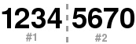

| Longueur | Type | Présence d'un checksum |
|---|---|---|
| 8 digits | numérique | oui |
L'EAN 8 est composé de 7 digits de données + 1 digit de checksum.
L'EAN 8 est dérivé de l'EAN 13. Il se base en partie sur les mêmes tables que l'EAN 13, et possède le même calcul de checksum.
Le calcul du digit de checksum de l'EAN 8 est très simple :
( 10 - [ (3 * Impaire + Paire) modulo 10 ] ) modulo 10
Ainsi, l'exemple donne :
donc le checksum de 7654321 est 0
Message EAN 8 : Checksum :
Une séquence de start débute le code barres : 101
Les 8 digits vont être séparés en 2 parties, à savoir la partie gauche du 1er au 4eme digit et la partie droite du 5eme au 8eme digit
La première partie est encodée selon la table suivante :
| digit | séquence |
|---|---|
| 0 | 0001101 |
| 1 | 0011001 |
| 2 | 0010011 |
| 3 | 0111101 |
| 4 | 0100011 |
| 5 | 0110001 |
| 6 | 0101111 |
| 7 | 0111011 |
| 8 | 0110111 |
| 9 | 0001011 |
La partie #1 sera donc 0011001 0010011 0111101 0100011
Une séquence intermédiaire sépare les 2 parties : 01010
La seconde partie est encodée selon la table suivante :
| digit | séquence |
|---|---|
| 0 | 1110010 |
| 1 | 1100110 |
| 2 | 1101100 |
| 3 | 1000010 |
| 4 | 1011100 |
| 5 | 1001110 |
| 6 | 1010000 |
| 7 | 1000100 |
| 8 | 1001000 |
| 9 | 1110100 |
La partie #2 sera donc 1001110 1010000 1000100 1110010
Une séquence de stop termine le code barres : 101
Chaque élément de la séquence binaire est représenté par un espace de même largeur, qu'il s'agisse d'un "1" ou d'un "0". Les "1" sont représentés par des espaces pleins et les "0" par des espaces vides.

Veuillez saisir le code :